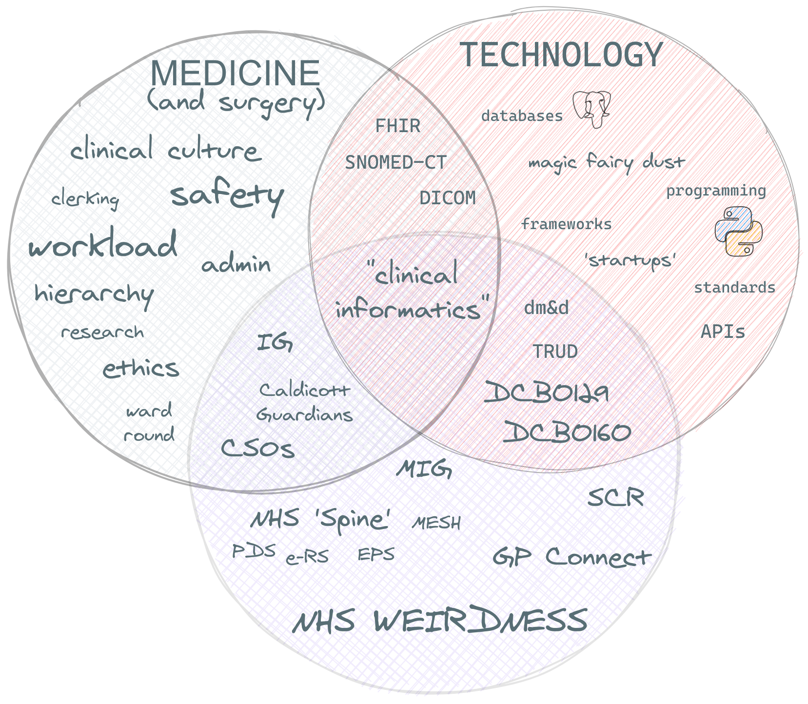

# WSxASiT ### March 2021 ----- ## Dr Marcus Baw #### Anaes / ICU / Emergency Med 2000 - 2010 #### General Practice 2010 - now #### Clinical Informatics (Fellow FCI) #### Software Developer (Python/Ruby/Javascript) #### Chair of RCGP Health Informatics Group <a href="https://github.com/pacharanero">github.com/pacharanero</a> --- ## Work and Blogs #### [RCPCH digital growth charts](https://growth.rcpch.ac.uk/) #### [Royal Colleges 3.0](https://marcus-baw.medium.com/royal-colleges-3-0-best-practice-as-code-7065bce821a7) #### [Open Source Is The Only Way For Medicine](https://medium.com/@marcus_baw/open-source-is-the-only-way-for-medicine-9e698de0447e) #### New market entrant GP system supplier #### RCGP Health Informatics Group ---  ----- ## "The Million Pound Chair" "Almost all large organisations today need at least one person right up at the top level of the company who can spot the million pound chairs without the help of subordinates." https://www.mysociety.org/2012/06/19/can-you-recognize-the-million-pound-chair/ ----- # what is code? --- ## programming languages #### A series of instructions for the computer to execute #### examples: Python - Ruby - Javascript - Java - Swift - + _hundreds more_ #### There is no 'best' language #### Some languages are better for some things than others --- ## libraries #### collections of reusable code #### specific to a language #### makes it easier to do a task --- # frameworks #### specialised libraries #### for building applications examples: - Ruby On Rails (Ruby) - Django (Python) - Express (JavaScript) ----- # Some Terms --- ## server #### A computer #### Doesn't need a screen or keyboard #### Interact with it through networks #### Serves something to the Client --- ## client #### Needs something from the Server #### Makes a Request #### The server sends a Response --- ## cloud #### "Someone Else's Computer" #### Servers and other tools - commoditised #### 'Rent A Server' --- ## 'front end' #### user interface code #### UI/UX, app, webapp #### requires design skill as well as coding #### native apps (iOS/Android) or JavaScript running in the browser --- ## 'back end' #### code that runs on the server #### business logic, storage, security #### API ↴ --- ## API #### Application Programming Interface #### 'web service' #### it's how your Alexa works! ----- # Medical Tech Things --- ## SNOMED-CT also: READ codes, CTV3, LOINC, ICD-9/10, ICPC --- ## FHIR Fast Healthcare Interoperability Resources --- ## NHS Spine - Some NHS APIs - E-Referral Service (e-RS) - Patient Demographics Service (PDS) - e-Prescribing Service (EPS) - MESH (Messaging) ----- # buzz words! --- ## Big Data #### data <!-- .element: class="fragment" --> --- ## Artificial Intelligence #### probability <!-- .element: class="fragment" --> #### machine learning <!-- .element: class="fragment" --> #### regulation??? <!-- .element: class="fragment" --> --- ## Blockchain #### chains of one-way mathematical functions <!-- .element: class="fragment" --> #### 'trustless' <!-- .element: class="fragment" --> #### in healthcare... a solution in search of a problem? <!-- .element: class="fragment" --> --- ## Interoperability #### making the data work everywhere <!-- .element: class="fragment" --> #### the opposite of 'silos' <!-- .element: class="fragment" --> #### hard to achieve - not all incentives are aligned <!-- .element: class="fragment" --> #### requires standards, openness, cooperation <!-- .element: class="fragment" --> ----- # Next Steps --- ## Learning Code? #### [codecademy.com](codecademy.com) #### [Clinicians Who Code](https://discourse.digitalhealth.net/c/clinicians-who-code/78) --- ## Clinical Informatics? #### [Faculty Of Clinical Informatics](https://facultyofclinicalinformatics.org.uk/) --- ## CCIO #### Chief Clinical Information Officer? #### Join the CCIO Network [discourse.digitalhealth.net](discourse.digitalhealth.net) ----- # Questions ----- ## made with #### [reveal.js](https://github.com/hakimel/reveal.js) #### [excalidraw](https://github.com/excalidraw/excalidraw)